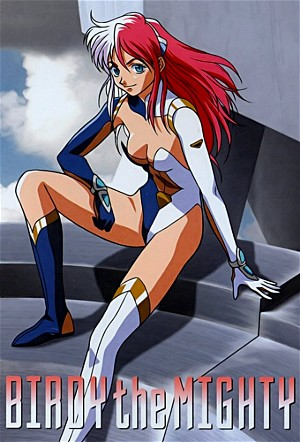

Birdy the Mighty (1996)
Science FictionComedyAnimationAdventureActionAnime
| Year | 1996 |
|---|---|
| Rating | M |
| Status | Completed |
| Seasons | 2 |
| Episodes | 8 |
| Genre | Science Fiction, Comedy, Animation, Adventure, Action, Anime |
Tsutomu Senkawa, an average school kid busy studying for his final exams, runs into a man under pursuit and gets caught up in the chase. In all the confusion he is accidentally killed. Luckily Birdy (an interplanetary agent) knows a way to save him, unfortunately that means joining bodies to become one. So now he is stuck with this officer and along for the ride capturing criminals and saving lives.
Episodes
Specials
| # | Title | Air Date | Synopsis |
|---|---|---|---|
| 1 | Act 1&2 CM | 1996-07-25 | Act 1 & 2 Commercial |
| 2 | Act 2 Commercial 1 | — | Commercials for Act 2 on VHS and LaserDisk |
| 3 | Act 2 Commercial 2 | — | Commercials for Act 2 on VHS and LaserDisk |
| 4 | Act 1 & 2 Commercials | — | Commercials for Act 1 & 2 on VHS and LaserDisk |
Season 1
| # | Title | Air Date | Synopsis |
|---|---|---|---|
| 1 | 2 Hearts in 1 Body | 1996-07-25 | Tsutomu Senkawa, who just wanted to quickly pick up a drink, finds himself in the middle of a fight between an alien and a Space Federation officer. |
| 2 | Double Trouble | 1996-09-25 | Tsutomu's big day has arrived, where it will be decided whether he passes the school entrance exam or not. However, Birdy wants to settle her "alien affairs" first, which he doesn't like at all. |
| 3 | Triangle Trial | 1996-12-18 | After Tsutomu transforms into Birdy in front of Natsumi, he tries to avoid her. However, Natsumi wishes to know what's going on and invites him to an amusement park. But one of Ms. Revi's men is already waiting for Birdy |
| 4 | Final Force | 1997-02-25 | As Birdy had already suspected, the sample was the serum that mutates people into monsters. She now has to hurry, because Hikawa is about to distribute it throughout Tokyo... |